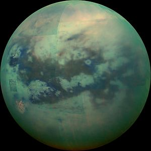

Titan
-
Titan is the only object in the Solar System, aside from Earth, to have bodies of liquid on its surface.
-
Its surface contains hydrocarbon lakes (methane, ethane).
-
It is the largest satellite of Saturn, is bigger than Mercury, and is the only satellite to maintain a thick atmosphere (nitrogen).
-
Titan may have an underground water ocean.

False-color infrared image of Titan, showing hydrocarbon lakes.